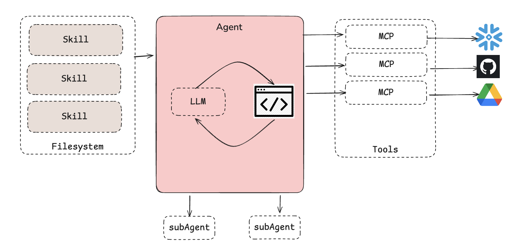

Skills: the art of progressive disclosure in the era of context engineering
Context Engineering is the strategy of curating and maintaining the optimal set of tokens during LLM (Large Language Models) inference. It basically address the holistic curation of information that enters the LLM which is normally composed by system prompts, tools definitions, documents retrieved, history and tools outputs.
However as the context length increases, the LLM ability to capture token relationships effectively decreases. Larger context leads to reduced focus, a phenomenon known as **“needle-in-a-haystack” and addressed in my previous blog here.
Skill tries to mitigate this by defining model context as files, like instructions as markdown and code as scripts. Those skills can be discovered and loaded dynamically i.e. it progressive disclose its capabilities while performing a task.
As described by Anthropic, thinking of a Skill for an agent is like putting together an onboarding guide for a new hire.
What are Skills:
Skills are folders of instructions, scripts, and resources that Claude loads dynamically to improve performance on specialized tasks.
Skills are based on Agents.md and should allow coding agents like claude code to complete tasks in a repeatable way while only exposing new context whenever appropriate (i.e. progressive disclosure).

How Skills Work:
Skills are self-container in its own folder with a SKILL.md file contaning the instructions and metadata. The agent determines which skills are relevant and loads the information it needs to complete the task at hand, thus preventing context window overload.

The Skill Anatomy:
According to the Agent Skills Specification:
SKILL.md is required
Optional directories: references, scripts, and assets
analyzing-marketing-campaign/
├── SKILL.md
└── references/
└── budget_reallocation_rules.mdThe Skill.md must start with YAML frontmatter containing skill-name and description. Check here the Agent Skills specification.
---
name: skill-name
description: A description of what this skill does and when to use it.
---One good example to check is the skill-creator by Anthropic.
When to Use Skills:
As described in agentskills.io, you should consider a skill for:
- Domain expertise: Package specialized knowledge into reusable instructions, from legal review processes to data analysis pipelines.
- New capabilities: Give agents new capabilities (e.g. creating presentations, building MCP servers, analyzing datasets).
- Repeatable workflows: Turn multi-step tasks into consistent and auditable workflows, such as customer call prep workflow and quartely business review.
- Interoperability: Reuse the same skill across different skills-compatible agent products (e.g. cursor, claude code, gemini CLI).
Testing your Skills:
Before deploying a skill, it’s crucial to validate that it works as intended. Anthropic provides the https://github.com/anthropics/skills/tree/main/skills/skill-creator skill, which not only helps you build new skills but also includes built-in testing capabilities.
For a hands-on tutorial on creating and testing skills, check out the https://github.com/anthropics/claude-cookbooks/tree/main/skills which provides step-by-step examples, or dive into the https://www.deeplearning.ai/short-courses/agent-skills-with-anthropic/ on DeepLearning.ai for comprehensive coverage of skill development and testing strategies.
What others achieved with Skills
Hugging face has showed here that the use of Skills can improve some open source model on complex and specialized tasks such as writing CUDA kernels. Check here one example of skill used for H100-diffusers-kernel-builder.
Here is the workflow from Hugging Face :
- Teacher model (Opus) generates the skill
- Test cases (Opus) are generated automatically from the task description
- Student model (local) is evaluated with and without the skill
- Skill lift measures the improvement
This is a good example of AI improving AI.
Skill.md vs Agent.md: Choosing the Right Approach
While Skills represent an evolution in context engineering, the earlier Agent.md pattern remains valuable for certain use cases. Understanding when to use each approach helps teams make better architectural decisions.
Agent.md, a markdown document containing comprehensive instructions that define an agent’s entire behavior in a single file, excels when:
- Creative and variable tasks: As Vercel discovered with their v0 agent, Agent.md outperformed Skills in their evaluations for UI generation tasks where creativity and flexibility matter more than structured workflows
- Smaller context windows are acceptable: When your agent’s total instructions fit comfortably in the context window without causing degradation
- Rapid prototyping: Single-file simplicity makes Agent.md ideal for quick experiments and proof-of-concepts
- Highly contextual decisions: Tasks requiring holistic understanding of all instructions simultaneously
Skills (Skill.md) shine when:
- Progressive disclosure matters: Large codebases or complex domains where loading everything upfront would overwhelm the context window
- Modular capabilities: Teams need to mix-and-match specialized capabilities without reloading base instructions
- Repeatable workflows: Standardized processes like code review, testing, or deployment that follow consistent patterns
- Team collaboration: Multiple contributors can work on different skills without conflicts
Conclusion
As we navigate the era of increasingly capable LLMs, context engineering emerges as the critical discipline that determines whether our AI agents can effectively harness their potential.
Skills represent an evolution in this journey—not as a universal replacement for simpler approaches like Agent.md, but as a sophisticated tool for managing complexity through progressive disclosure.